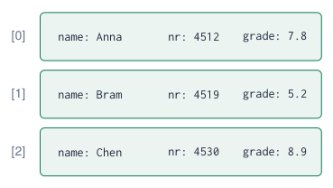
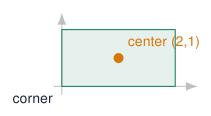

Structs: Grouping Data¶
Why structs?¶
Without a struct: parallel arrays
String names[] = {"Anna", "Bram", "Chen"};
int numbers[] = {4512, 4519, 4530};
float grades[] = {7.8, 5.2, 8.9};
-
The data of one student is spread over three arrays.
-
Sort or delete one array and forget another: the data no longer matches.
With a struct: one record per student

Array vs struct
An array groups values of the same type. A struct groups values of different types that belong together: one record.
Sources: Introduction to structs, members, and member selection
Declaring and using a struct¶
struct Student { // a new type
String name; // members
int number;
float grade;
}; // <- semicolon!
void setup() {
Serial.begin(115200);
Student a = {"Anna", 4512, 7.8}; // in order
Student b;
b.name = "Bram"; // dot operator
b.number = 4519;
b.grade = 5.2;
b.grade += 0.5; // members are variables
Student copy = a; // copies all members
Serial.printf("%s (%d): %.1f\n",
a.name.c_str(), a.number, a.grade);
}
void loop() {}
-
struct Student { \dots{} };defines a new type; it does not create a variable yet. -
Student a;creates a variable of that type. -
Access a member with the dot:
a.grade. -
= {\dots}fills the members in declaration order. -
=between two structs copies all members.
Classic error
Forgetting the ; after the closing } gives a confusing error on the next line.
Sources: Introduction to structs, members, and member selection
Example: an array of students¶
struct Student { String name; int number; float grade; };
Student group[] = {
{"Anna", 4512, 7.8}, {"Bram", 4519, 5.2},
{"Chen", 4530, 8.9}, {"Dewi", 4544, 6.1} };
const int N = sizeof(group) / sizeof(group[0]);
float averageGrade(const Student g[], int n) {
float sum = 0;
for (int i = 0; i < n; i++) sum += g[i].grade;
return sum / n;
}
int bestIndex(const Student g[], int n) {
int best = 0;
for (int i = 1; i < n; i++) if (g[i].grade > g[best].grade) best = i;
return best;
}
void setup() {
Serial.begin(115200);
for (int i = 0; i < N; i++)
Serial.printf("%-5s %.1f\n", group[i].name.c_str(), group[i].grade);
Serial.printf("average %.2f, best: %s\n", averageGrade(group, N),
group[bestIndex(group, N)].name.c_str());
}
void loop() {}
-
group[i].grade: first select the element, then the member. -
One array of structs replaces three parallel arrays: the data of a student always stays together.
-
Functions take the whole array of records.
Structs as parameters and return values¶
struct Point {
float x, y;
};
struct Rectangle {
Point corner; // a struct inside a struct
float width, height;
};
float area(const Rectangle &r) { // const reference: no copy
return r.width * r.height;
}
Point center(const Rectangle &r) { // returns a struct
return { r.corner.x + r.width / 2, r.corner.y + r.height / 2 };
}
float distance(Point a, Point b) { // by value: small struct
return sqrt(sq(a.x - b.x) + sq(a.y - b.y));
}
void setup() {
Serial.begin(115200);
Rectangle box = { {0, 0}, 4, 2 }; // corner (0,0), 4 x 2
Point c = center(box); // (2, 1)
Serial.printf("area %.1f, center (%.1f, %.1f)\n", area(box), c.x, c.y);
Serial.printf("distance to origin %.2f\n", distance(c, {0, 0}));
}
void loop() {}
-
A struct can be a parameter and a return value: an easy way to return several values at once.
-
Structs can contain other structs:
box.corner.x. -
Large structs: pass as
const Type &: no copy, and the function cannot change it. -
sq(x)is the Arduino function for \(x^2\).

Sources: Passing and returning structs
Embedded example: a struct per LED¶
struct Led {
int pin;
unsigned long interval; // ms
unsigned long last = 0; // default values
bool on = false;
};
Led leds[] = { // pin, interval
{23, 250}, {22, 500}, {21, 1000}, {4, 2000},
};
const int N = sizeof(leds) / sizeof(leds[0]);
void update(Led &led) { // reference: changes the LED
if (millis() - led.last >= led.interval) {
led.last = millis();
led.on = !led.on;
digitalWrite(led.pin, led.on);
}
}
void setup() {
for (int i = 0; i < N; i++) pinMode(leds[i].pin, OUTPUT);
}
void loop() {
for (int i = 0; i < N; i++) update(leds[i]);
}
-
Every LED keeps its own pin, speed, time stamp and state.
-
Four LEDs, four speeds, no
delay(), and one small function. -
A fifth LED: add one line to the array.
-
Members can have default values (
last = 0).
Compare
The Several independent timers example needed separate variables for every LED. A struct makes the pattern scale.
Embedded example: one measurement, one struct¶
#include <Wire.h>
#include <Adafruit_BME280.h>
Adafruit_BME280 bme;
struct Measurement {
float temperature; // C
float humidity; // %
float pressure; // hPa
unsigned long time; // ms since start
};
Measurement measure() { // returns all values at once
Measurement m;
m.temperature = bme.readTemperature();
m.humidity = bme.readHumidity();
m.pressure = bme.readPressure() / 100.0F;
m.time = millis();
return m;
}
void print(const Measurement &m) {
Serial.printf("t=%lus T=%.1f C RH=%.0f %% p=%.1f hPa\n",
m.time / 1000, m.temperature, m.humidity, m.pressure);
}
void setup() { Serial.begin(115200); Wire.begin(19, 18); bme.begin(0x76); }
void loop() { print(measure()); delay(2000); }
-
One function measures, one function prints: the struct carries the data between them.
-
Storing history?
Measurement log[60];keeps the last 60 measurements.
Three ways to return several values
Reference parameters, a struct as return value, or a class. Choose what is clearest.
struct, enum and class¶
enum State { IDLE, HEATING, ALARM };
struct Machine { // state + data together
State state = IDLE;
unsigned long since = 0; // when the state began
float setpoint = 21.0;
};
Machine heater;
void enter(Machine &m, State s) {
m.state = s;
m.since = millis();
}
-
In C++,
structandclassare almost the same; convention:structfor plain data records,classfor objects with methods (likeBlinker). -
Combined with
enum, a struct keeps the state of a state machine and its data together.
Sources: Class declaration
Quiz: structs¶
-
What is the difference between an array and a struct?
Check your answer
Array: many values of the same type, by index. Struct: values of different types, by name.
-
Given
Student group[10];, how do you read the grade of the third student?Check your answer
group[2].grade -
What does
Student b = a;do?Check your answer
It copies every member of
ainto the new structb. -
Why write
void print(const Measurement &m)instead ofvoid print(Measurement m)?Check your answer
No copy of the whole struct, and
constguarantees the function does not change it. -
The compiler complains on the line after your struct. Most likely cause?
Check your answer
The missing
;after the closing}of the struct.
Exercises: structs¶
Exercise 1 – Class list
Make an array of 8 Student structs. Print the list sorted by grade (bubble sort: swap whole structs), the average and the number of passes.
Exercise 2 – Geometry
Add struct Circle { Point center; float r; } and write area(), contains(Circle c, Point p) and overlap(Circle a, Circle b).
Exercise 3 – Button records
Make struct Button { int pin; bool last; unsigned long lastChange; int presses; } and use it to debounce and count both course-board keys with one function.
Exercise 4 – Weather log
Keep the last 30 Measurements in a circular buffer and print min, max and average temperature every minute.